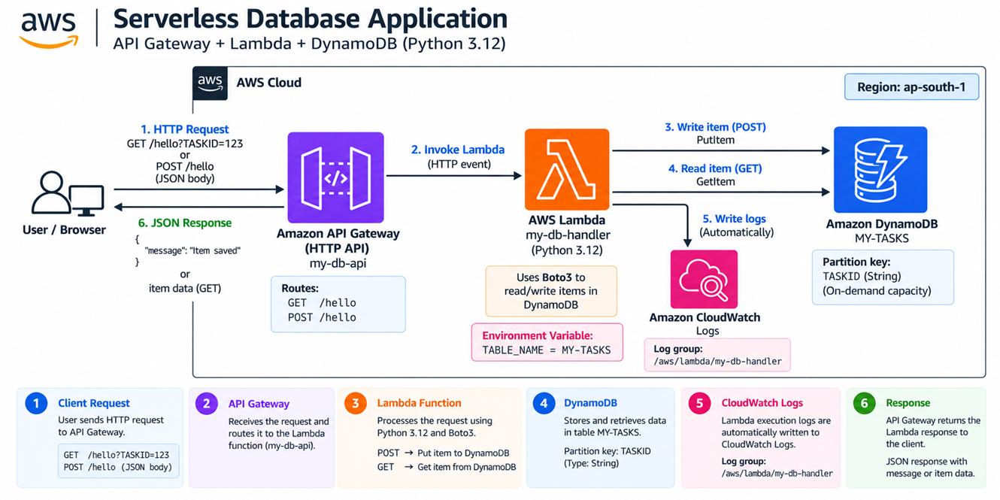
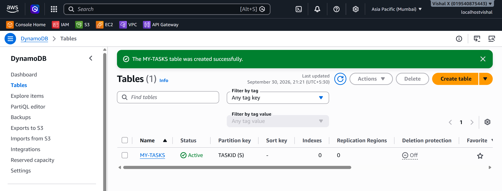
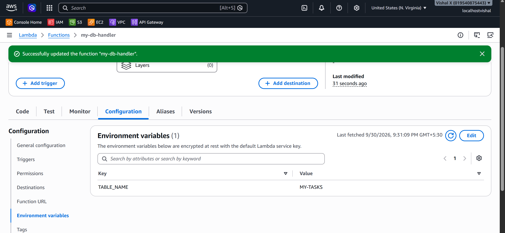
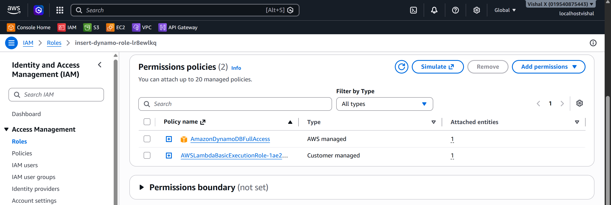
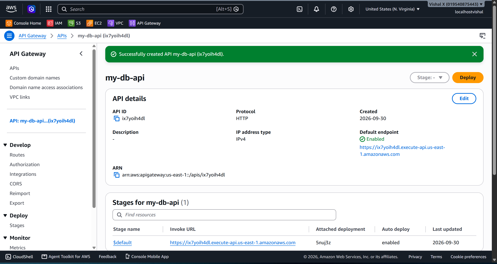
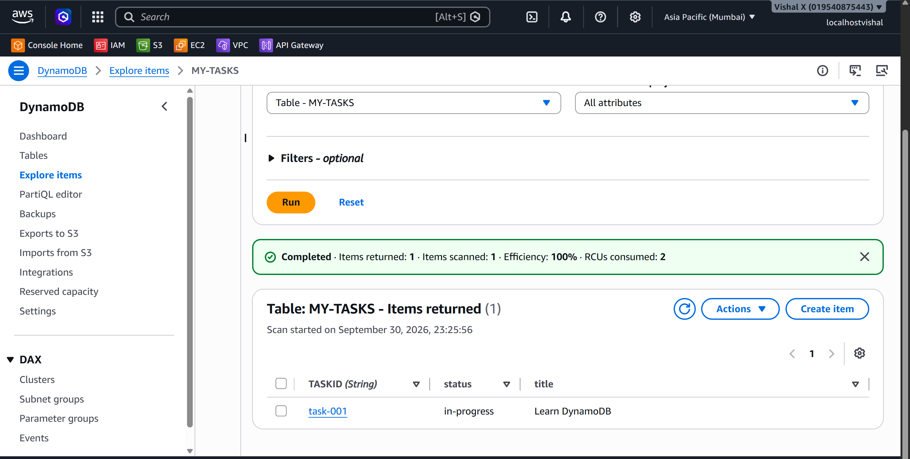
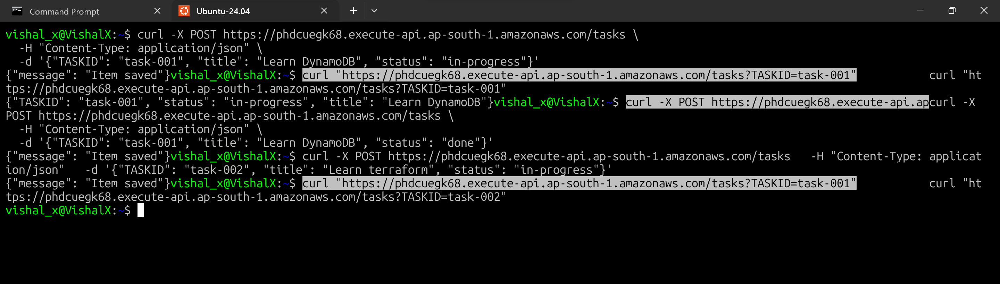
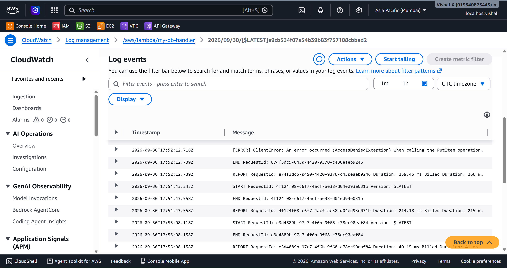

Serverless Database Application
Fourteenth project. Connected Lambda to DynamoDB to build a serverless database application — created a DynamoDB table, wrote a Lambda function using Boto3 to read and write items, attached the right IAM permissions, and wired it all together through API Gateway.
What I built
A fully serverless stack where API Gateway receives HTTP requests, Lambda processes them using Boto3, and DynamoDB stores the data. POST to write an item, GET to read it back. No EC2, no RDS, no servers to manage.

Why DynamoDB
Every project before this that needed a database used RDS — a relational database running on a managed server. DynamoDB is different. It's a NoSQL key-value store that's fully serverless, scales automatically, and charges per request. For a Lambda-based backend it's the natural fit — both scale to zero, both scale up automatically, and neither needs a server running 24/7.
Services used
| Service | What I used it for |
|---|---|
| DynamoDB | NoSQL table that stores the application data |
| Lambda | Processes requests and reads/writes to DynamoDB using Boto3 |
| API Gateway | Receives HTTP requests and routes them to Lambda |
| IAM | Grants Lambda permission to access DynamoDB |
| CloudWatch Logs | Stores Lambda execution logs automatically |
Resources I created
| Resource | Value |
|---|---|
| Region | ap-south-1 |
| DynamoDB table | MY-TASKS |
| Partition key | TASKID (String) |
| Lambda function | my-db-handler |
| API name | my-db-api |
| Log group | /aws/lambda/my-db-handler |
Steps
1. Created the DynamoDB table
- Open the DynamoDB console
- Click Tables → Create table
- On the Create table page:
- Table name:
MY-TASKS - Partition key:
TASKID— type String - Leave all other settings default (on-demand capacity)
- Click Create table
- Wait for the table status to show Active
The partition key is the primary identifier — every item in the table must have a unique TASKID.

2. Created the Lambda function
- Open the Lambda console
- Click Functions → Create function
- On the Create function page:
- Select Author from scratch
- Function name:
my-db-handler - Runtime: Python 3.12
- Permissions: Create a new role with basic Lambda permissions
- Click Create function
- On the function page, click Configuration tab → Environment variables → Edit → Add environment variable:
- Key:
TABLE_NAME - Value:
MY-TASKS - Click Save
- Back on the Code tab, replace the default code with:
import json
import boto3
import os
dynamodb = boto3.resource('dynamodb')
table = dynamodb.Table(os.environ['TABLE_NAME'])
def lambda_handler(event, context):
method = event.get('requestContext', {}).get('http', {}).get('method', 'GET')
if method == 'POST':
body = json.loads(event.get('body', '{}'))
table.put_item(Item=body)
return {'statusCode': 200, 'body': json.dumps({'message': 'Item saved'})}
elif method == 'GET':
params = event.get('queryStringParameters') or {}
task_id = params.get('TASKID')
if not task_id:
return {'statusCode': 400, 'body': json.dumps({'error': 'TASKID required'})}
response = table.get_item(Key={'TASKID': task_id})
item = response.get('Item')
if not item:
return {'statusCode': 404, 'body': json.dumps({'error': 'Not found'})}
return {'statusCode': 200, 'body': json.dumps(item)}
return {'statusCode': 405, 'body': json.dumps({'error': 'Method not allowed'})}
- Click Deploy
The table name comes from an environment variable — keeps configuration out of the code.

3. Configured IAM permissions
- Open the IAM console
- Click Roles → search for the role created for
my-db-handler→ click it - Click Add permissions → Attach policies
- Search for
AmazonDynamoDBFullAccess→ tick it → Add permissions
Without this, Lambda throws AccessDeniedException when trying to read or write to DynamoDB.

4. Connected Lambda to API Gateway
Same process as Project 13 — create an HTTP API with GET and POST routes both pointing to my-db-handler.
- API Gateway → Create API → HTTP API → Build
- Add integration: Lambda →
my-db-handler - API name:
my-db-api - Add two routes:
- GET
/tasks - POST
/tasks - Stage:
$default, auto-deploy enabled - Click Create
Copy the Invoke URL from the API page.

5. Wrote and read data
Write — POST request:
curl -X POST https://phdcuegk68.execute-api.ap-south-1.amazonaws.com/tasks \
-H "Content-Type: application/json" \
-d '{"TASKID": "task-001", "title": "Learn DynamoDB", "status": "in-progress"}'
Read — GET request:
To verify in the console: DynamoDB → Tables → MY-TASKS → Explore table items — the item should appear.

6. Verified the full workflow
- Sent a POST request — item created
- Checked DynamoDB console — item visible
- Sent a GET request — item returned as JSON
- Checked CloudWatch logs — Lambda execution confirmed


7. Cleaned up
- API Gateway → APIs → delete
my-db-api - Lambda → Functions → tick
my-db-handler→ Actions → Delete → confirm - DynamoDB → Tables → tick
MY-TASKS→ Delete → confirm
Screenshots
| # | File | Description |
|---|---|---|
| 01 | screenshots/01-dynamodb-table.png |
DynamoDB table created with status Active |
| 02 | screenshots/02-lambda-function.png |
Lambda function code and TABLE_NAME environment variable |
| 03 | screenshots/03-iam-permissions.png |
IAM role with AmazonDynamoDBFullAccess attached |
| 04 | screenshots/04-api-gateway.png |
API Gateway with GET and POST routes configured |
| 05 | screenshots/05-dynamodb-items.png |
DynamoDB Explore items showing the written item |
| 06 | screenshots/06-test-workflow.png |
Terminal showing POST and GET requests with responses |
| 07 | screenshots/07-cloudwatch-logs.png |
CloudWatch logs showing Lambda execution |
Commands
Testing
- POST request created an item in DynamoDB
- GET request retrieved the item by TASKID
- Verified item visible in DynamoDB console
- Confirmed CloudWatch logs showed successful execution
Things that can go wrong
| Problem | What caused it | How I fixed it |
|---|---|---|
| AccessDeniedException | Lambda role missing DynamoDB permissions | Attached AmazonDynamoDBFullAccess to the role |
| ResourceNotFoundException | Wrong table name in environment variable | Checked TABLE_NAME matches the actual table name exactly |
| 400 error on GET | TASKID not in query string | Added ?TASKID=task-001 to the URL |
| Item not found | Wrong TASKID or item not created | Checked DynamoDB console for the item |
Security considerations
- Never hardcode AWS credentials in Lambda code — use the execution role
- In production, use a least-privilege policy instead of AmazonDynamoDBFullAccess
- Enable DynamoDB encryption at rest (enabled by default)
Cost
DynamoDB on-demand: pay per request — effectively zero for a test project. Lambda: first 1 million requests per month are free. Delete the table, function, and API after the exercise.
What I learned
- DynamoDB is a NoSQL key-value store — the partition key is the primary identifier for every item
- Boto3 is the Python SDK for AWS —
dynamodb.Table()gives a clean interface for reads and writes - Lambda needs explicit IAM permissions to access other AWS services — it doesn't get them automatically
- Environment variables keep configuration out of the code
- The full serverless stack (API Gateway + Lambda + DynamoDB) requires no servers at all